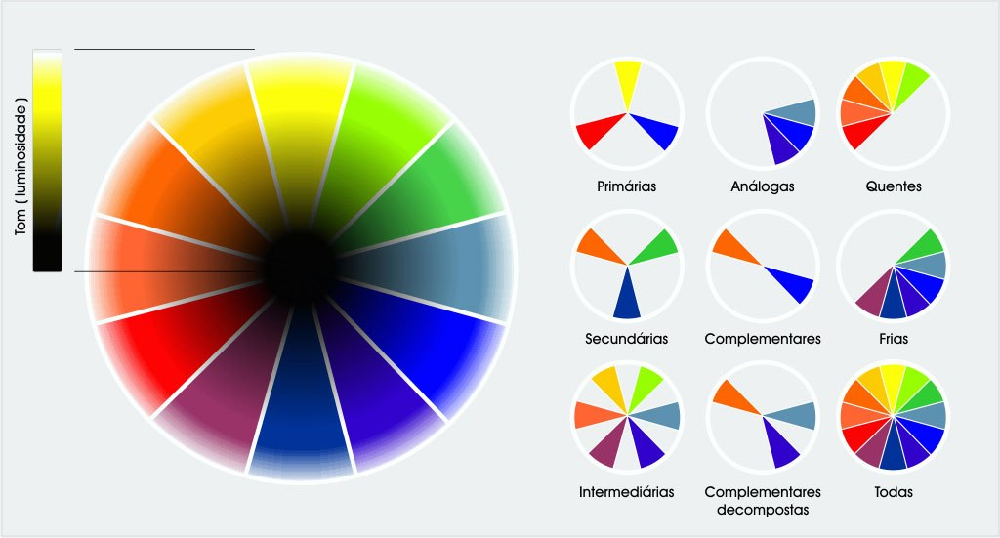

A Teoria das Cores são os estudos e experimentos relacionados com a associação entre a luz a natureza das cores, realizados por Leonardo Da Vinci, Isaac Newton, Goethe, entre outros.
Leonardo Da Vinci, em suas pesquisas e formulações retratadas no livro "Tratado da Pintura e da Paisagem – Sombra e Luz", afirmava que a cor era uma propriedade da luz e não dos objetos.
Mais tarde, o físico inglês Isaac Newton, nos seus experimentos estudou a influência da luz do sol na formação das cores. Newton estudou o fenômeno da difração, que consistia na decomposição da luz solar em várias cores quando atravessava um prisma, e denominou o conjunto de cores como espectro.
O espectro é formado pela união das cores vermelho, laranja, amarelo, verde, azul, anil e violeta. As sete cores que compõem a luz do sol e que formam o arco-íris.
O círculo cromático contém 12 diferentes cores, que ajudam a visualizar as cores primárias, secundárias e terciárias que formam o espectro visível.
O branco e o preto (convencionalmente designados por cores) são apenas resultado da presença ou ausência de luz. A cor branca é a luz pura, em que há uma reflexão total das sete cores; a cor preta é ausência total de luz, pois as cores não se refletem, elas são absorvidas.
Quando a luz do sol incide em um objeto branco, este reflete os raios solares enquanto um objeto preto absorve todos os raios solares.

Cores harmoniosas são aquelas que funcionam bem em conjunto ou justapostas, produzindo um esquema de cores atraente. O círculo cromático ou círculo de cores pode ser utilizado de forma a ajudar na escolha das cores e combinações harmônicas.
É a harmonia resultante de uma mesma cor da roda das cores. As tonalidades podem mudar, mas todas ficam no mesmo matiz da roda das cores. O esquema ou harmonia monocromática utiliza variações de luminosidade e saturação de uma mesma cor. Estas harmonias luzem simples e elegantes, de fácil percepção ao observador especialmente quando se trata de tons azuis e verdes. A cor principal pode ser combinada com cores neutras, preto e branco, no entanto pode ser difícil quando se utiliza esta harmonia, ressaltar os elementos mais importantes.
É a harmonia formada de uma cor primária combinada com duas cores vizinhas na roda das cores. Uma cor é utilizada como a dominante enquanto que as adjacentes são utilizadas para enriquecer a harmonia.
É a harmonia que ocorre quando combinamos cores opostas na roda das cores. Em outras palavras, são cores que se encontram simétricas com respeito ao centro da roda. O Matiz varia em 180 º entre um e outro.